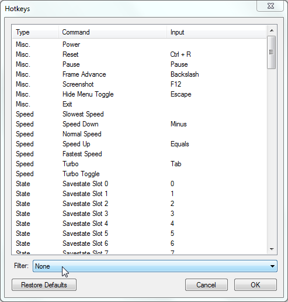
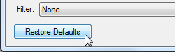
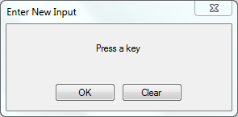
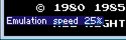
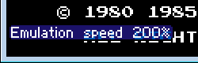
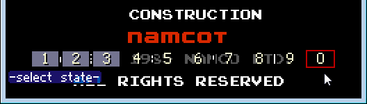
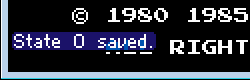
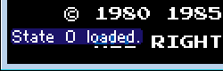
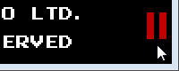

Содержание
Для настройки горячих клавиш в эмуляторе выбери Config -> Map Hotkeys.

Переключай внизу опции вкладки Filter, ознакомься с рекомендуемыми горячими клавишами, протестируй их работу, и при необходимости перенастрой их.
Для восстановления настроек по умолчанию нажми кнопку Restore Defaults в окне Hotkeys.

Эта кнопка восстанавливает настройки сразу всех горячих клавиш, независимо от опции вкладки Filter.
Для перенастройки горячей клавиши дважды кликни на нее, откроется окошко настройки.

Если нужно удалить горячие клавиши у команды, нажми кнопку Clear. Если же нужно их переназначить, тогда нажимай нужные клавиши (или комбинацию клавиш) на клавиатуре, после чего окошко автоматически закроется, а клавиши отобразятся в окне Hotkeys.
Чтобы использовать комбинацию клавиш вместе со служебными клавишами (Shift, Alt, Ctrl и другие), необходимо нажать обычную клавишу во время удержания служебной.
Выбери опцию для вкладки Filter, чтобы посмотреть информацию по рекомендуемым горячим клавишам для ромхакинга.
| Speed | State | Misc | Conflicts |
От скорости работы эмулятора зависит не только скорость эмуляции, но еще и скорость исчезновения сообщений на экране. Для отображения на экране скорости работы эмулятора выбери Config -> Display -> FPS.
Некоторые опции доступны в эмуляторе во вкладке NES -> Emulation Speed.
Каждое последующее нажатие постепенно снижает скорость эмуляции.

Каждое последующее нажатие постепенно повышает скорость эмуляции.

Теоретически можно ускорить максимум в 64 раза, но на практике вряд ли получится.
При удержании клавиши эмулятор будет работать с максимально возможной скоростью (быстрее, чем через Speed Up).
Максимальная скорость зависит от производительности твоего компьютера, а также от нагруженности эмулятора при использовании дополнительных окон, например Debugger'а или Hex Editor'а.
Некоторые опции доступны в эмуляторе во вкладке File -> Savestate, а также в Config -> Enable.
Выбрать слот для сохранения игрового процесса. Если на слоте еще нету сохранения, он отображается прозрачным, а если уже есть, то будет выделен серым цветом. Выбранный слот выделен красным цветом.

При закрытии эмулятор запоминает последний выбранный номер слота, который будет использован по умолчанию командами Save State и Load State при следующем открытии эмулятора.
Сохранить на выбранный слот.

Файлы сохранений хранятся в папке fcs с расширением файла от .fc0 до .fc9, в зависимости от записанного слота.
Можно поменять цифру в расширении файла, изменив номер слота, с которого он будет загружаться.
Загрузить сохранение с выбранного слота.

Если слот пустой/отсутствует файл сохранения, эмулятор выдаст на экране сообщение об ошибке.
Некоторые опции доступны в эмуляторе во вкладке NES.
Другое название - Hard Reset. Эмулирует отключение и повторное включение питания на оригинальной приставке. Функция клавиши практически аналогична новому открытию ROM'а. Все игровые данные будут сброшены.
Другое название - Soft Reset. Эмулирует нажатие кнопки Reset на оригинальной приставке. В зависимости от игры, некоторые данные могут быть сохранены, например Hi-Score.
Временная приостановка эмуляции игры. В эмуляторе на экране отображается значок паузы.

Этой же клавишей можно снять паузу с эмулятора.
Если эмулятор не стоит на паузе, то выставляется пауза при нажатии.
Если эмулятор уже стоит на паузе, то разовое нажатие клавиши проматывает эмуляцию игры на 1 кадр вперед.
Если удерживать клавишу, эмуляция запустится в обычном режиме. После отпускания клавиши эмулятор станет на паузу.
Пауза снимается горячей клавишей Pause.
Клавиша позволяет отменить сохранение, если ты его ошибочно перезапишешь. Этой же клавишей можно отменить отмену сохранения. Сообщение на экране не отображается после использования этой горячей клавиши.
При каждом сохранении в папке fcs создается бэкап-файл, состоящий из предыдущего сохранения этого слота. Однако эта клавиша работает только для того сохранения, которое ты делал/отменял в последний раз.
Если требуется восстановить другое сохранение, надо делать это вручную, удалив оригинальный файл и переименовав бэкап в папке fcs.
После настроек горячих клавиш загляни сюда, чтобы убедиться, что нету конфликтов клавиш с другими командами. При необходимости перенастрой или удали конфликтующую горячую клавишу.
Если не знаешь за что отвечает какая-то команда, которая конфликтует с той, которую ты настроил для себя, не заморачивайся по этому поводу, просто сотри конфликтующую.